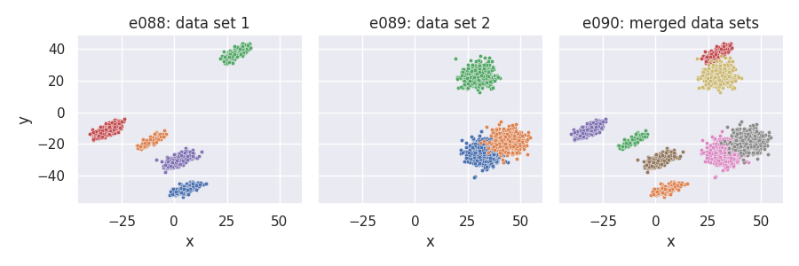
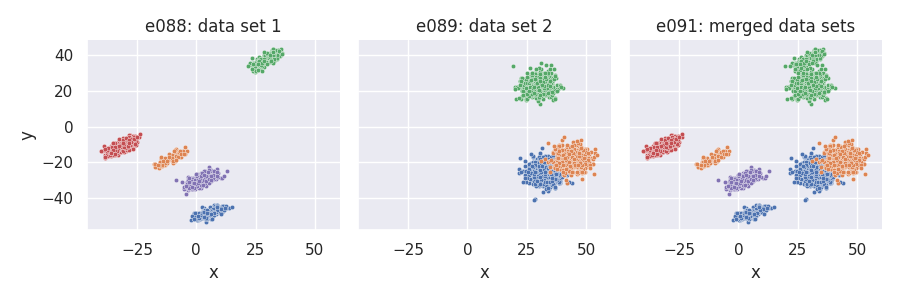
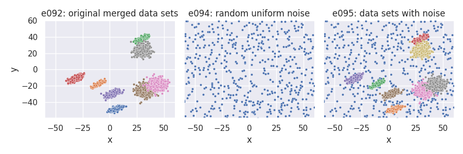
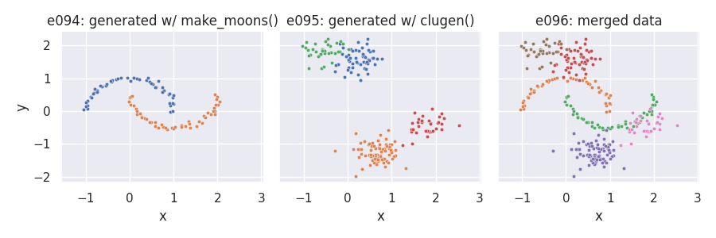
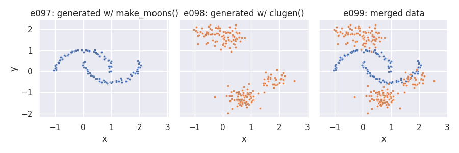

Note
Click here to download the full example code
Merging and hierarchical cluster examples¶
This section contains several examples on how to merge cluster data, either
generated with pyclugen or from other sources. To run the examples we first
need to import the clugen() and
clumerge() functions:
Although it is possible to merge data in any dimension, these examples will
focus on merging 2D data. Therefore, we'll use the same
plot_examples_2d function used for
the 2D examples:
Merging two data sets generated with clugen()¶
e088 = clugen(2, 5, 1000, [1, 1], np.pi / 12, [20, 20], 14, 1.2, 1.5, rng=seed1,
proj_dist_fn="unif", point_dist_fn="n")
e089 = clugen(2, 3, 1500, [1, 0], 0.05, [20, 20], 0, 0, 4, rng=seed2,
point_dist_fn="n", cluster_offset = [20, 0])
e090 = clumerge(e088, e089)
plot_examples_2d(
e088, "e088: data set 1",
e089, "e089: data set 2",
e090, "e090: merged data sets")

In the previous example, clusters from individual data sets remain as separate
clusters in the merged data set. It's also possible to maintain the original
cluster labels by setting the clusters_field parameter to None:
plot_examples_2d(
e088, "e088: data set 1",
e089, "e089: data set 2",
e091, "e091: merged data sets")

Adding noise to a clugen()-generated data set¶
prng = np.random.default_rng(seed)
e092 = {"points": 120 * prng.random((500, 2)) - 60, "clusters": np.ones(500, dtype=np.int32)}
e093 = clumerge(e092, e090) # clumerge(e092, e088, e089) would also work
plot_examples_2d(
e090, "e090: original merged data sets",
e092, "e092: random uniform noise",
e093, "e093: data sets with noise",
pmargin=0)

Merging with data not generated with clugen()¶
Data generated with clugen() can be merged with
other data sets, for example data created with one of
scikit-learn's generators:
from sklearn.datasets import make_moons
X, y = make_moons(100, noise=0.05, random_state=seed)
e094 = {"points": X, "clusters": y}
e095 = clugen(2, 4, 200, [1, 1], np.pi / 12, [1, 1], 0.1, 0.01, 0.25, rng=seed,
proj_dist_fn = "unif", point_dist_fn = "n")
e096 = clumerge(e094, e095)
plt = plot_examples_2d(
e094, "e094: generated w/ make_moons()",
e095, "e095: generated w/ clugen()",
e096, "e096: merged data")

We can also hierarchize clusters from different sources:
e097 = {**e094, "hclusters": np.ones(100, dtype=np.int32)}
e098 = {**e095._asdict(), "hclusters": 2 * np.ones(200, np.int32)}
e099 = clumerge(e097, e098, clusters_field="hclusters")
plt = plot_examples_2d(
e097, "e097: generated w/ make_moons()",
e098, "e098: generated w/ clugen()",
e099, "e099: merged data",
clusters_field="hclusters")

Total running time of the script: ( 0 minutes 2.517 seconds)
Download Python source code: plot_5_mrg_examples.py